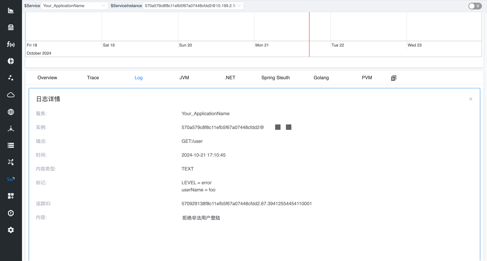

SkyWalking Go Toolkit Log 与 Metrics 的使用
引言
Apache SkyWalking Go是一款针对 Golang 应用程序提供可观测的工具, 旨在为单体服务、微服务、云原生架构和容器化应用设计。 它是 Apache SkyWalking 探针项目的 Go 语言实现，提供了全面的服务追踪、性能指标分析、应用拓扑分析等功能。
SkyWalking Go利用Go语言的并发特性，实现了高效的数据采集和分析。它通过编译期间使用AST在代码中插入少量的探针代码，可以捕获到服务的请求和响应数据，以及系统的运行状态信息。 SkyWalking Go通过上报这些收集的数据，能够生成详细的服务调用链路图，帮助开发人员了解服务之间的依赖关系，以及每个服务的性能状况。
SkyWalking Go 当前提供了以下三种能力让用户手动上报相关信息
- Trace
- Metrics
- Log
本文旨在指导用户如何使用 toolkit 手动上报 Log日志 以及 Metrics指标。有关如何操作 toolkit Trace 上报链路信息可看 SkyWalking Go Toolkit Trace 详解。 在深入了解之前，您可以参考 SkyWalking Go Agent快速开始指南 来学习如何使用SkyWalking Go Agent。
下面将会介绍如何在特定场景中使用这些接口。
导入 Trace Toolkit
首先在项目的根目录中执行以下命令：
go get github.com/apache/skywalking-go/toolkit
手动上报 Log 日志
在链路追踪中，日志扮演着至关重要的角色。它们记录系统中每个请求的详细信息，包括时间戳、处理节点、错误信息等，从而帮助开发人员和运维团队快速定位性能瓶颈和故障根源。 通过对比不同请求的日志，团队可以分析请求的流转过程，优化系统架构，提升服务响应速度和稳定性。
在 SkyWalking Go toolkit 中，手动上报的日志将会附加在当前上下文中的 Span 上，这使得我们可以针对特定的 Span 关联特定的日志信息。
首先我们需要导入 toolkit log 包:
"github.com/apache/skywalking-go/toolkit/logging"
我们可以构建一个简单的 Web 服务: 根据请求参数中的用户名来判断是否合法。
当 userName 参数是非法时，我们通过 logging.Error API 记录一条错误日志。该日志将会附加到当前上下文活跃的 Span 上。
在记录日志时，我们还可以通过可变参数追加 keyValues 到日志信息上, 让日志信息更具有描述力。
详细的使用文档可看 SkyWalking Go toolkit-logging。
package main
import (
"log"
"net/http"
_ "github.com/apache/skywalking-go"
"github.com/apache/skywalking-go/toolkit/logging"
)
func main() {
http.HandleFunc("/user", func(w http.ResponseWriter, r *http.Request) {
userName := r.URL.Query().Get("userName")
if len(userName) == 0 || userName != "root" {
// 记录一条日志信息, 这条日志信息将会附加到当前上下文活跃的 Span 上
// 我们可以通过可变参数追加日志Tag
logging.Error("拒绝非法用户登陆", "userName", userName)
w.WriteHeader(http.StatusUnauthorized)
return
}
w.WriteHeader(http.StatusAccepted)
})
if err := http.ListenAndServe(":8080", nil); err != nil {
log.Fatalln("server running by err:", err)
}
}
然后我们使用 SkyWalking Go Agent 对其进行增强:
go build -toolexec="/path/go-agent" -a -o demo .

手动上报 Metrics 指标信息
Metrics在链路追踪中极为重要，它们提供了系统性能的定量分析。 通过监控请求的延迟、吞吐量和错误率等指标，团队能够识别性能瓶颈和潜在问题，从而优化系统架构和资源分配。 结合链路追踪，metrics能够揭示请求在各个服务间的流转情况，帮助团队深入了解系统的健康状态和使用模式，确保服务的高可用性和用户体验，最终实现业务目标的有效支持。
当前 toolkit metrics 支持以下指标类型
- Counter
- Gauge
- Histogram
首先我们需要导入 toolkit metric 包:
"github.com/apache/skywalking-go/toolkit/metric"
我们可以构建一个简单的 Echo 服务, 创建一个 Counter 类型的指标来记录请求次数。
同时使用 metric.WithLabels 为指标添加额外的标签。
package main
import (
"log"
"net/http"
_ "github.com/apache/skywalking-go"
"github.com/apache/skywalking-go/toolkit/metric"
)
func main() {
// 构建一个 Counter 类型 metric
// 同时我们为该 Counter 设置 labels
counter := metric.NewCounter(
"http_request_count",
metric.WithLabels("path", "/ping"),
)
http.HandleFunc("/ping", func(w http.ResponseWriter, r *http.Request) {
// 每次请求来都计数加一
counter.Inc(1)
w.WriteHeader(http.StatusOK)
})
if err := http.ListenAndServe(":8080", nil); err != nil {
log.Fatalln("server running by err:", err)
}
}
然后我们使用 SkyWalking Go Agent 对其进行增强:
go build -toolexec="/path/go-agent" -a -o demo .
我们可以在 SkyWalking 自定义仪表盘 中展示指标信息。
总结
本文讲述了 Skywalking Go 的 Log APIs 和 Metrics APIs 的简单使用。 它为用户提供了自定义上报日志信息和指标信息的功能。
SkyWalking Go toolkit 设计之初就秉承简单易用的思想，旨在缩短用户和产品之间的距离。
更多的信息可看 SkyWalking Go。